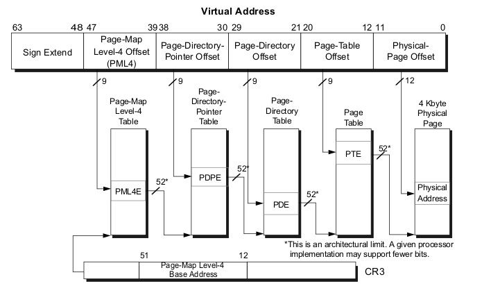

Paging
Introduction
In the fifth part of the series Linux kernel booting process we learned about what the kernel does in its earliest stage. In the next step the kernel will initialize different things like initrd mounting, lockdep initialization, and many many other things, before we can see how the kernel runs the first init process.
Yeah, there will be many different things, but many many and once again many work with memory.
In my view, memory management is one of the most complex parts of the Linux kernel and system programming in general. This is why we need to get acquainted with paging, before we proceed with the kernel initialization stuff.
Paging is a mechanism that translates a linear memory address to a physical address. If you have read the previous parts of this book, you may remember that we saw segmentation in real mode when physical addresses are calculated by shifting a segment register by four and adding an offset. We also saw segmentation in protected mode, where we used the descriptor tables and base addresses from descriptors with offsets to calculate the physical addresses. Now we will see paging in 64-bit mode.
As the Intel manual says:
Paging provides a mechanism for implementing a conventional demand-paged, virtual-memory system where sections of a program’s execution environment are mapped into physical memory as needed.
So... In this post I will try to explain the theory behind paging. Of course it will be closely related to the x86_64 version of the Linux kernel, but we will not go into too much details (at least in this post).
Enabling paging
There are three paging modes:
- 32-bit paging;
- PAE paging;
- IA-32e paging.
We will only explain the last mode here. To enable the IA-32e paging paging mode we need to do the following things:
- set the
CR0.PGbit; - set the
CR4.PAEbit; - set the
IA32_EFER.LMEbit.
We already saw where those bits were set in arch/x86/boot/compressed/head_64.S:
movl $(X86_CR0_PG | X86_CR0_PE), %eax
movl %eax, %cr0
and
movl $MSR_EFER, %ecx
rdmsr
btsl $_EFER_LME, %eax
wrmsr
Paging structures
Paging divides the linear address space into fixed-size pages. Pages can be mapped into the physical address space or external storage. This fixed size is 4096 bytes for the x86_64 Linux kernel. To perform the translation from linear address to physical address, special structures are used. Every structure is 4096 bytes and contains 512 entries (this only for PAE and IA32_EFER.LME modes). Paging structures are hierarchical and the Linux kernel uses 4 level of paging in the x86_64 architecture. The CPU uses a part of linear addresses to identify the entry in another paging structure which is at the lower level, physical memory region (page frame) or physical address in this region (page offset). The address of the top level paging structure located in the cr3 register. We have already seen this in arch/x86/boot/compressed/head_64.S:
leal pgtable(%ebx), %eax
movl %eax, %cr3
We build the page table structures and put the address of the top-level structure in the cr3 register. Here cr3 is used to store the address of the top-level structure, the PML4 or Page Global Directory as it is called in the Linux kernel. cr3 is 64-bit register and has the following structure:
63 52 51 32
--------------------------------------------------------------------------------
| | |
| Reserved MBZ | Address of the top level structure |
| | |
--------------------------------------------------------------------------------
31 12 11 5 4 3 2 0
--------------------------------------------------------------------------------
| | | P | P | |
| Address of the top level structure | Reserved | C | W | Reserved |
| | | D | T | |
--------------------------------------------------------------------------------
These fields have the following meanings:
- Bits 63:52 - reserved must be 0.
- Bits 51:12 - stores the address of the top level paging structure;
- Bits 11: 5 - reserved must be 0;
- Bits 4 : 3 - PWT or Page-Level Writethrough and PCD or Page-level cache disable indicate. These bits control the way the page or Page Table is handled by the hardware cache;
- Bits 2 : 0 - ignored;
The linear address translation is following:
- A given linear address arrives to the MMU instead of memory bus.
- 64-bit linear address is split into some parts. Only low 48 bits are significant, it means that
2^48or 256 TBytes of linear-address space may be accessed at any given time. cr3register stores the address of the 4 top-level paging structure.47:39bits of the given linear address store an index into the paging structure level-4,38:30bits store index into the paging structure level-3,29:21bits store an index into the paging structure level-2,20:12bits store an index into the paging structure level-1 and11:0bits provide the offset into the physical page in byte.
schematically, we can imagine it like this:

Every access to a linear address is either a supervisor-mode access or a user-mode access. This access is determined by the CPL (current privilege level). If CPL < 3 it is a supervisor mode access level, otherwise it is a user mode access level. For example, the top level page table entry contains access bits and has the following structure (See arch/x86/include/asm/pgtable_types.h for the bit offset definitions):
63 62 52 51 32
--------------------------------------------------------------------------------
| N | | |
| | Available | Address of the paging structure on lower level |
| X | | |
--------------------------------------------------------------------------------
31 12 11 9 8 7 6 5 4 3 2 1 0
--------------------------------------------------------------------------------
| | | M |I| | P | P |U|W| |
| Address of the paging structure on lower level | AVL | B |G|A| C | W | | | P |
| | | Z |N| | D | T |S|R| |
--------------------------------------------------------------------------------
Where:
- 63 bit - N/X bit (No Execute Bit) which presents ability to execute the code from physical pages mapped by the table entry;
- 62:52 bits - ignored by CPU, used by system software;
- 51:12 bits - stores physical address of the lower level paging structure;
- 11: 9 bits - ignored by CPU;
- MBZ - must be zero bits;
- Ignored bits;
- A - accessed bit indicates was physical page or page structure accessed;
- PWT and PCD used for cache;
- U/S - user/supervisor bit controls user access to all the physical pages mapped by this table entry;
- R/W - read/write bit controls read/write access to all the physical pages mapped by this table entry;
- P - present bit. Current bit indicates was page table or physical page loaded into primary memory or not.
Ok, we know about the paging structures and their entries. Now let's see some details about 4-level paging in the Linux kernel.
Paging structures in the Linux kernel
As we've seen, the Linux kernel in x86_64 uses 4-level page tables. Their names are:
- Page Global Directory
- Page Upper Directory
- Page Middle Directory
- Page Table Entry
After you've compiled and installed the Linux kernel, you can see the System.map file which stores the virtual addresses of the functions that are used by the kernel. For example:
$ grep "start_kernel" System.map
ffffffff81efe497 T x86_64_start_kernel
ffffffff81efeaa2 T start_kernel
We can see 0xffffffff81efe497 here. I doubt you really have that much RAM installed. But anyway, start_kernel and x86_64_start_kernel will be executed. The address space in x86_64 is 2^64 wide, but it's too large, that's why a smaller address space is used, only 48-bits wide. So we have a situation where the physical address space is limited to 48 bits, but addressing still performs with 64 bit pointers. How is this problem solved? Look at this diagram:
0xffffffffffffffff +-----------+
| |
| | Kernelspace
| |
0xffff800000000000 +-----------+
| |
| |
| hole |
| |
| |
0x00007fffffffffff +-----------+
| |
| | Userspace
| |
0x0000000000000000 +-----------+
This solution is sign extension. Here we can see that the lower 48 bits of a virtual address can be used for addressing. Bits 63:48 can be either only zeroes or only ones. Note that the virtual address space is split into 2 parts:
- Kernel space
- Userspace
Userspace occupies the lower part of the virtual address space, from 0x000000000000000 to 0x00007fffffffffff and kernel space occupies the highest part from 0xffff8000000000 to 0xffffffffffffffff. Note that bits 63:47 is 0 for userspace and 1 for kernel space. All addresses which are in kernel space and in userspace or in other words which higher 63:48 bits are zeroes or ones are called canonical addresses. There is a non-canonical area between these memory regions. Together these two memory regions (kernel space and user space) are exactly 2^48 bits wide. We can find the virtual memory map with 4 level page tables in the Documentation/x86/x86_64/mm.txt:
0000000000000000 - 00007fffffffffff (=47 bits) user space, different per mm
hole caused by [48:63] sign extension
ffff800000000000 - ffff87ffffffffff (=43 bits) guard hole, reserved for hypervisor
ffff880000000000 - ffffc7ffffffffff (=64 TB) direct mapping of all phys. memory
ffffc80000000000 - ffffc8ffffffffff (=40 bits) hole
ffffc90000000000 - ffffe8ffffffffff (=45 bits) vmalloc/ioremap space
ffffe90000000000 - ffffe9ffffffffff (=40 bits) hole
ffffea0000000000 - ffffeaffffffffff (=40 bits) virtual memory map (1TB)
... unused hole ...
ffffec0000000000 - fffffc0000000000 (=44 bits) kasan shadow memory (16TB)
... unused hole ...
ffffff0000000000 - ffffff7fffffffff (=39 bits) %esp fixup stacks
... unused hole ...
ffffffff80000000 - ffffffffa0000000 (=512 MB) kernel text mapping, from phys 0
ffffffffa0000000 - ffffffffff5fffff (=1525 MB) module mapping space
ffffffffff600000 - ffffffffffdfffff (=8 MB) vsyscalls
ffffffffffe00000 - ffffffffffffffff (=2 MB) unused hole
We can see here the memory map for user space, kernel space and the non-canonical area in-between them. The user space memory map is simple. Let's take a closer look at the kernel space. We can see that it starts from the guard hole which is reserved for the hypervisor. We can find the definition of this guard hole in arch/x86/include/asm/page_64_types.h:
#define __PAGE_OFFSET _AC(0xffff880000000000, UL)
Previously this guard hole and __PAGE_OFFSET was from 0xffff800000000000 to 0xffff87ffffffffff to prevent access to non-canonical area, but was later extended by 3 bits for the hypervisor.
Next is the lowest usable address in kernel space - ffff880000000000. This virtual memory region is for direct mapping of all the physical memory. After the memory space which maps all the physical addresses, the guard hole. It needs to be between the direct mapping of all the physical memory and the vmalloc area. After the virtual memory map for the first terabyte and the unused hole after it, we can see the kasan shadow memory. It was added by commit and provides the kernel address sanitizer. After the next unused hole we can see the esp fixup stacks (we will talk about it in other parts of this book) and the start of the kernel text mapping from the physical address - 0. We can find the definition of this address in the same file as the __PAGE_OFFSET:
#define __START_KERNEL_map _AC(0xffffffff80000000, UL)
Usually kernel's .text starts here with the CONFIG_PHYSICAL_START offset. We have seen it in the post about ELF64:
readelf -s vmlinux | grep ffffffff81000000
1: ffffffff81000000 0 SECTION LOCAL DEFAULT 1
65099: ffffffff81000000 0 NOTYPE GLOBAL DEFAULT 1 _text
90766: ffffffff81000000 0 NOTYPE GLOBAL DEFAULT 1 startup_64
Here I check vmlinux with CONFIG_PHYSICAL_START is 0x1000000. So we have the start point of the kernel .text - 0xffffffff80000000 and offset - 0x1000000, the resulted virtual address will be 0xffffffff80000000 + 1000000 = 0xffffffff81000000.
After the kernel .text region there is the virtual memory region for kernel module, vsyscalls and an unused hole of 2 megabytes.
We've seen how virtual memory map in the kernel is laid out and how a virtual address is translated into a physical one. Let's take the following address as example:
0xffffffff81000000
In binary it will be:
1111111111111111 111111111 111111110 000001000 000000000 000000000000
63:48 47:39 38:30 29:21 20:12 11:0
This virtual address is split in parts as described above:
63:48- bits not used;47:39- bits store an index into the paging structure level-4;38:30- bits store index into the paging structure level-3;29:21- bits store an index into the paging structure level-2;20:12- bits store an index into the paging structure level-1;11:0- bits provide the offset into the physical page in byte.
That is all. Now you know a little about theory of paging and we can go ahead in the kernel source code and see the first initialization steps.
Conclusion
It's the end of this short part about paging theory. Of course this post doesn't cover every detail of paging, but soon we'll see in practice how the Linux kernel builds paging structures and works with them.
Please note that English is not my first language and I am really sorry for any inconvenience. If you've found any mistakes please send me PR to linux-insides.